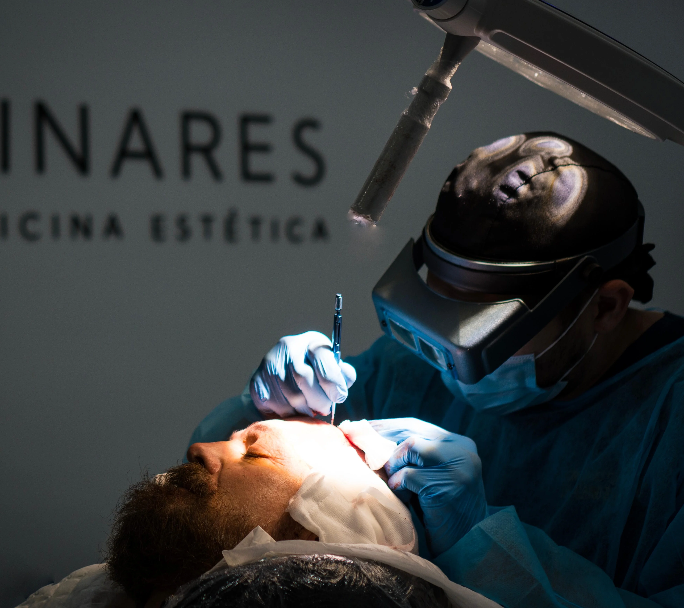

Injerto Capilar FUE
Resultados naturales.
Extracción folículo a folículo para repoblar entradas y coronilla con un diseño capilar personalizado.
Enfoque del tratamiento
Técnica mínimamente invasiva, cicatriz casi imperceptible y seguimiento post para consolidar un resultado natural.